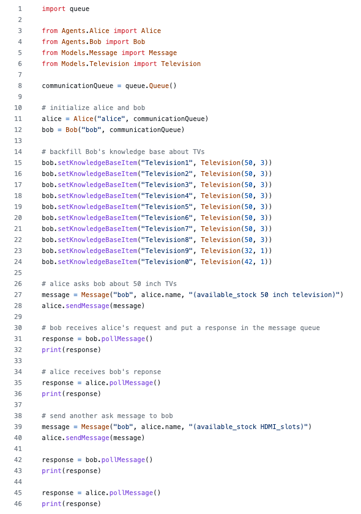
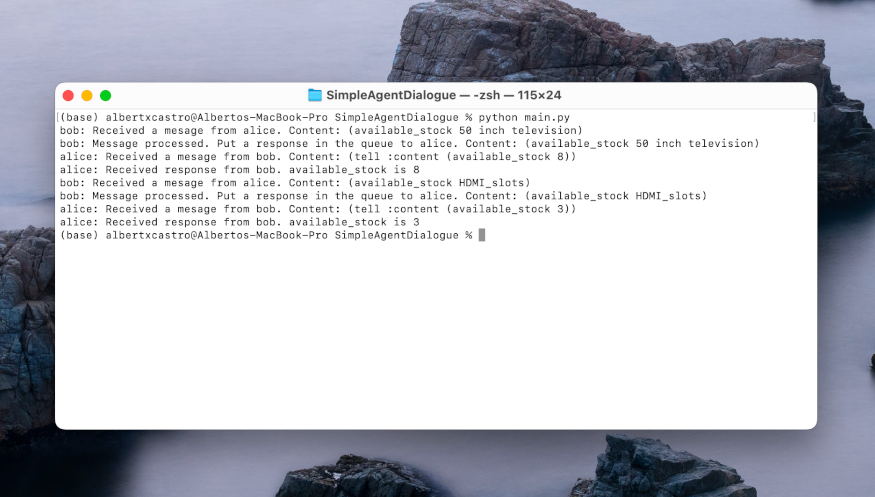

Creating Agent Dialogues
Create an agent dialogue, using KQML and KIF, between two agents (named Alice and Bob).
Alice is an agent designed to procure stock and Bob is an agent that controls the stock levels for a warehouse. This dialogue should see Alice asking Bob about the available stock of 50 inch televisions, and also querying the number of HDMI slots the televisions have.
The solution can be found in this GitHub repo
The solution implements a super class Agent and two derived classes Bob and Alice.
In the main script, both agents are instantiated and also injected a message queue they use for asynchronous communication.


Additionally, Bob is injected its knowledge base of televisions that represents the stock, and also messages
between agents are set up.
I tried to follow an object-oriented design to simplify the code. After executing the code, this is the output.